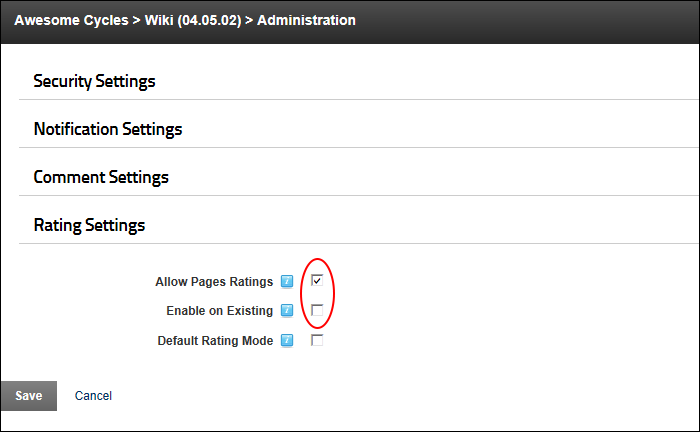

Allowing Wiki Ratings for Individual Pages
How to allow users to add ratings to one or more pages of the Wiki module. This setting enables the "Enable Page Ratings" field on the Add Wiki Topic page, enabling you to enable or disable rating for individual pages when adding or editing a page.
- Select
 Wiki Configuration from the Wiki module actions menu.
Wiki Configuration from the Wiki module actions menu.
- Expand the Rating Settings section.
- At Allow Page Ratings, .
- At Enable on Existing, .

-
At Default Rating Mode, select from these options:
- to pre-select the "Enable Page Ratings" field on both existing and new pages.
- to deselect the "Enable Page Ratings" field when adding a new page. This will not change this setting on existing pages. Selecting this option will require you to enable rating for individual pages. See "Enabling Ratings for an Existing Wiki Page"
- Click the Save button.